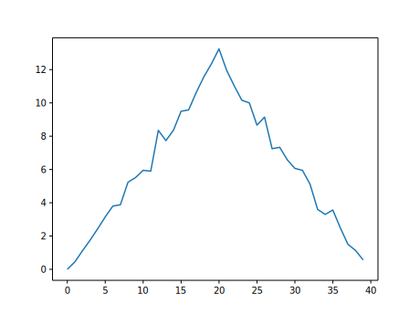

Image 1 of 1: ‘'data' is a 3 by 3 numpy array containing row 0: ['A', 'B', 'C'], row 1: ['D', 'E', 'F'], androw 2: ['G', 'H', 'I']. Starting in the upper left hand corner, data[0, 0] = 'A', data[0, 1] = 'B',data[0, 2] = 'C', data[1, 0] = 'D', data[1, 1] = 'E', data[1, 2] = 'F', data[2, 0] = 'G',data[2, 1] = 'H', and data[2, 2] = 'I',in the bottom right hand corner.’
Figure 2
Image 1 of 1: ‘Per-patient maximum inflammation is computed row-wise across all columns usingnumpy.amax(data, axis=1). Per-day average inflammation is computed column-wise across all rows usingnumpy.mean(data, axis=0).’
Image 1 of 1: ‘Heat map representing the data variable. Each cell is colored by value along a color gradientfrom blue to yellow.’
Figure 2
Image 1 of 1: ‘A line graph showing the average inflammation across all patients over a 40-day period.’

Figure 3
Image 1 of 1: ‘A line graph showing the maximum inflammation across all patients over a 40-day period.’
Figure 4
Image 1 of 1: ‘A line graph showing the minimum inflammation across all patients over a 40-day period.’
Figure 5
Image 1 of 1: ‘Three line graphs showing the daily average, maximum and minimum inflammation over a 40-day period.’
Figure 6
Image 1 of 1: ‘Three line graphs, with step lines connecting the points, showing the daily average, maximumand minimum inflammation over a 40-day period.’
Image 1 of 1: ‘veg is represented as a shelf full of produce. There are three rows of vegetableson the shelf, and each row contains three baskets of vegetables. We can labeleach basket according to the type of vegetable it contains, so the top rowcontains (from left to right) lettuce, lettuce, and peppers.’
Figure 2
Image 1 of 1: ‘veg is now shown as a list of three rows, with veg[0] representing the top row ofthree baskets, veg[1] representing the second row, and veg[2] representing the bottom row.’
Figure 3
Image 1 of 1: ‘veg is now shown as a two-dimensional grid, with each basket labeled according toits index in the nested list. The first index is the row number and the secondindex is the basket number, so veg[1][3] represents the basket on the far rightside of the second row (basket 4 on row 2): zucchini’
To reference a specific basket on a specific shelf, you use two
indexes. The first index represents the row (from top to bottom) and the
second index represents the specific basket (from left to right).
Image 1 of 1: ‘Output from the first iteration of the for loop. Three line graphs showing the daily average,maximum and minimum inflammation over a 40-day period for all patients in the first dataset.’
Figure 2
Image 1 of 1: ‘Output from the second iteration of the for loop. Three line graphs showing the daily average,maximum and minimum inflammation over a 40-day period for all patients in the seconddataset.’
Figure 3
Image 1 of 1: ‘Output from the third iteration of the for loop. Three line graphs showing the daily average,maximum and minimum inflammation over a 40-day period for all patients in the thirddataset.’
Figure 4
Image 1 of 1: ‘Heat map of the third inflammation dataset. Note that there are sporadic zero values throughoutthe entire dataset, and the last patient only has zero values over the 40 day study.’
Image 1 of 1: ‘A flowchart diagram of the if-else construct that tests if variable num is greater than 100’
Figure 2
Image 1 of 2: ‘A flowchart diagram of a conditional section with multiple elif conditions and some possible outcomes.’
Image 2 of 2: ‘A flowchart diagram of a conditional section with multiple if statements and some possible outcomes.’
C gets printed because the first two conditions,
4 > 5 and 4 == 5, are not true, but
4 < 5 is true. In this case only one of these conditions
can be true for at a time, but in other scenarios multiple
elif conditions could be met. In these scenarios only the
action associated with the first true elif condition will
occur, starting from the top of the conditional section.
This contrasts with the case of multiple if statements,
where every action can occur as long as their condition is met.


!['data' is a 3 by 3 numpy array containing row 0: ['A', 'B', 'C'], row 1: ['D', 'E', 'F'], androw 2: ['G', 'H', 'I']. Starting in the upper left hand corner, data[0, 0] = 'A', data[0, 1] = 'B',data[0, 2] = 'C', data[1, 0] = 'D', data[1, 1] = 'E', data[1, 2] = 'F', data[2, 0] = 'G',data[2, 1] = 'H', and data[2, 2] = 'I',in the bottom right hand corner.](fig/python-zero-index.svg)


![veg is now shown as a list of three rows, with veg[0] representing the top row ofthree baskets, veg[1] representing the second row, and veg[2] representing the bottom row.](fig/04_groceries_veg0.png)
![veg is now shown as a two-dimensional grid, with each basket labeled according toits index in the nested list. The first index is the row number and the secondindex is the basket number, so veg[1][3] represents the basket on the far rightside of the second row (basket 4 on row 2): zucchini](fig/04_groceries_veg00.png)


 This contrasts with the case of multiple
This contrasts with the case of multiple